| 陆军科技 | 海军科技 | 空军科技 | 电子与工业 |
|---|---|---|---|
无
|
|
没有
|
|
| 陆军学说 | 海军学说 | 空军学说 |
|---|---|---|
|
|
「无」 |
原页面：Australia
 澳大利亚 is a
澳大利亚 is a  英国
英国  自治领 in Oceania with a core population of 6.76 M and an additional 931.82 K non-core. It comprises the entire Australian continent and the island of Tasmania as core territory, as well as owning the Solomon Islands, eastern New Guinea and numerous smaller islands. Australia is bordered by the
自治领 in Oceania with a core population of 6.76 M and an additional 931.82 K non-core. It comprises the entire Australian continent and the island of Tasmania as core territory, as well as owning the Solomon Islands, eastern New Guinea and numerous smaller islands. Australia is bordered by the  荷属东印度, an
荷属东印度, an  整合傀儡国 of the
整合傀儡国 of the  荷兰, in New Guinea (Papua) and is close to
荷兰, in New Guinea (Papua) and is close to  新西兰,
新西兰,  英国 in the Christmas Island,
英国 in the Christmas Island,  法国 in New Caledonia and
法国 in New Caledonia and  葡萄牙 in Portuguese Timor.
葡萄牙 in Portuguese Timor.
Australia was among the first countries to announce it was at war with Germany, on 3 September 1939. However, Australia did not make a separate declaration of war. Prime Minister Robert Menzies considered that the British declaration legally bound Australia, and he announced that a state of war now existed between Australia and  德国 as a direct consequence of the British declaration.
德国 as a direct consequence of the British declaration.
More than one million Australian men served in the war out of a total population of around seven million. Although it was ill-prepared for war, the Australian government immediately assigned to the war effort units already in the UK (such as No 10 Squadron RAAF), and soon had dispatched other Royal Australian Air Force squadrons and personnel to serve with the Royal Air Force.
The Royal Australian Navy (RAN) commenced operations against Italy after its entry into the war in June 1940. Later that year the Australian Army entered campaigns against  意大利和
意大利和 德国 in North Africa and
德国 in North Africa and  希腊. German submarines and raiding ships operated in Australian waters throughout the war.
希腊. German submarines and raiding ships operated in Australian waters throughout the war.
The most intensive and numerically largest part of Australia's war effort came after the outbreak of hostilities with  日本 in late 1941. The Australian mainland came under direct attack for the first time in 1942, when Japanese aircraft launched a major bombing attack on Darwin in February, and attacked many other towns in northern Australia. Axis covert raiding ships and submarines struck at shipping and shore targets around Australia, including a submarine attack on Sydney Harbour.
日本 in late 1941. The Australian mainland came under direct attack for the first time in 1942, when Japanese aircraft launched a major bombing attack on Darwin in February, and attacked many other towns in northern Australia. Axis covert raiding ships and submarines struck at shipping and shore targets around Australia, including a submarine attack on Sydney Harbour.
It is set to receive its own national focus tree expansion in the "Thunder at our Gates" Expansion Pack DLC.
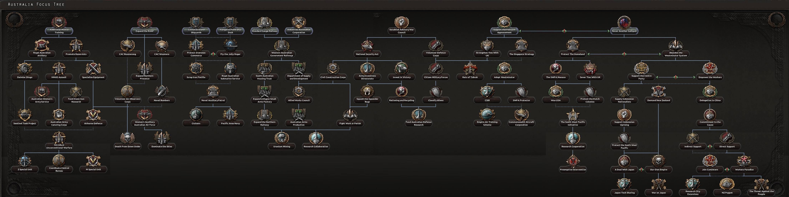
The Australian national focus tree can be divided into 7 branches:
Without the  雷霆临门 DLC,
雷霆临门 DLC,  澳大利亚 starts with the following 国家精神:
澳大利亚 starts with the following 国家精神:
With the  雷霆临门 DLC,
雷霆临门 DLC,  澳大利亚 starts with the following 国家精神 instead:
澳大利亚 starts with the following 国家精神 instead:
 澳大利亚开局拥有 3 个可用科研槽；另有 2 个可通过国策树解锁。
澳大利亚开局拥有 3 个可用科研槽；另有 2 个可通过国策树解锁。
| 陆军科技 | 海军科技 | 空军科技 | 电子与工业 |
|---|---|---|---|
无
|
|
没有
|
|
| 陆军学说 | 海军学说 | 空军学说 |
|---|---|---|
|
|
「无」 |
| 陆军科技 | 海军科技 | 空军科技 | 电子与工业 |
|---|---|---|---|
无
|
|
没有
|
|
| 陆军学说 | 海军学说 | 空军学说 |
|---|---|---|
|
|
|
 澳大利亚 为各种科技与装备设有一些独特名称，列于此处。请注意，通用名称不在此列。
澳大利亚 为各种科技与装备设有一些独特名称，列于此处。请注意，通用名称不在此列。
| 类型 | 1918 | 1936 | 1938 | 1939 | 1940 | 1941 | 1942 | 1943 | 1944 |
|---|---|---|---|---|---|---|---|---|---|
| 支援武器 | Vickers MG & Stokes mortar | Lewis Mk. III DEMS & SBML two-inch mortar | Bren Mk. I & ML 3 inch mortar | Bren Mk. III & ML 4.2 inch Mortar | |||||
| 步兵装备 | LSAF Rifle No.1 MkIII | LSAF Rifle No.6 MkI | Owen Gun | Electrolux SMLE-CAR | |||||
| 步兵反坦克 | Boys Anti-Tank Rifle | PIAT | |||||||
| 摩托化步兵 | Ford F30 AP | ||||||||
| 机械化 | Bren Carrier | Universal Carrier | Kangaroo Carrier | ||||||
| 两栖牵引车 | LVT-2 | NA | |||||||
| 装甲车 |
Dingo | Staghound | NA |
| 科技年份 | 轻型（反坦克/自行火炮/防空） | 中型（反坦克/自行火炮/防空） | 现代（反坦克/自行火炮/防空） | 重型（反坦克/自行火炮/防空） | 超重型（反坦克/自行火炮/防空） |
|---|---|---|---|---|---|
| 1918 | Vickers II | ||||
| 1934 | Vickers Mk VI (Vickers Mk VI TD / Vickers Mk VI SPA / Vickers Mk VI AA) | Matilda II (Matilda II TD / Matilda II SPA / Matilda II AA) | |||
| 1936 | M3 Light (M3 Light TD / M3 Light SPA / M3 Light AA) | ||||
| 1938 | M3 Grant (M3 Grant TD / M3 Grant SPA / M3 Grant AA) | ||||
| 1940 | Sentinel (Sentinel TD / Sentinel SPA / Sentinel AA) | Churchill (Churchill TD / Churchill SPA / Churchill AA) | |||
| 1941 | Crusader II (Crusader II TD / Crusader II SPA / Crusader II AA) | Tortoise (Iron Duke / NA / NA) | |||
| 1943 | Thunderbolt (Thunderbolt TD / Yeramba / Thunderbolt AA) | Black Prince (Black Prince TD / Black Prince SPA / Black Prince AA) | |||
| 1945 | Centurion (Centurion Malkara / Centurion AVRE / Centurion Marksman) | ||||
| 备注：若无一步不退，中型坦克 I 与 II 将推迟一年解锁。 | |||||
| 科技年份 | 防空炮 | 火炮 | 火箭炮 | 反坦克炮 |
|---|---|---|---|---|
| 1934 | QF 18-pounder | |||
| 1936 | QF 3-inch | QF 2-pounder | ||
| 1939 | QF 25-pounder | |||
| 1940 | QF 40 mm Bofors | RP-3 HE/GP | QF 6-pounder | |
| 1942 | BL 5.5-inch Medium Gun | |||
| 1943 | QF 3.7-inch | RP-3 HE/SAP | QF 17-pounder |
| 科技年份 | 近距空中支援（舰载） | 战斗机（舰载） | 海军轰炸机（舰载） | 重型战斗机 | 战术轰炸机 | 战略轰炸机 | 运输机 |
|---|---|---|---|---|---|---|---|
| 1933 | Demon | Wapiti | NA | de Havilland DH.86 | |||
| 1936 | Wirraway (Osprey) | Wirraway (Sea Gladiator) | Hudson (Shark) | Blenheim IF | 战斗 | 惠灵顿 | |
| 1940 | CA-4 Woomera (Skua) | Boomerang (Fulmar) | Catalina (Roc) | Beaufighter | Baltimore | Lancaster | C-47 Skytrain |
| 1944 | CA-11 Woomera (Sea Fury) | CA-15 (Firefly) | Beaufort (Firebrand) | Mosquito | Baltimore | Lincoln | Avro York |
| 喷气发动机技术 | |||||||
| 1945 | Vampire | Canberra | |||||
| 1950 | CA-23 | NA | Vulcan | ||||
 澳大利亚 owns 12 core and 4 colonial states.
澳大利亚 owns 12 core and 4 colonial states.
| 州 | 城市 | 地形（省份数） | 区域 | 是否核心州 | ||
|---|---|---|---|---|---|---|
| 俾斯麦 | Rabaul | 5 | Large Island | 345,640 | ||
| Central Australia | – | – | 荒地 | 30,000 | ||
| 威廉皇帝领地 | 莱城 马当 韦瓦克 | 3 2 1 |
乡村区 | 359,000 | ||
| 新南威尔士 | Canberra Cataract Dam Newcastle Sydney |
30 0 1 20 |
密集城市区 | 2,563,100 | ||
| North Queensland | – | – | 乡村区 | 100,000 | ||
| North West Australia | – | – | 荒地 | 1,000 | ||
| Northern Territory | Darwin | 5 | 荒地 | 13,000 | ||
| Papua | 阿洛陶 达鲁 莫尔兹比港 | 1 1 3 |
乡村区 | 718,000 | ||
| Queensland | Brisbane Townsville |
15 1 |
发达乡村区 | 816,800 | ||
| 所罗门群岛 | 布因 瓜达尔卡纳尔 | 1 3 |
Large Island | 150,000 | ||
| South Australia | Adelaide | 15 | 乡村区 | 200,800 | ||
| South West Australia | – | – | 牧区 | 50,000 | ||
| South West Queensland | – | – | 牧区 | 10,000 | ||
| Tasmania | Hobart | 1 | 小岛 | 224,000 | ||
| Victoria | Melbourne | 20 | 密集城市区 | 2,219,500 | ||
| Western Australia | Perth | 10 | 乡村区 | 317,200 |
 澳大利亚 starts as
澳大利亚 starts as  民主主义 with elections every 3 years. The next election is in September 1937.
民主主义 with elections every 3 years. The next election is in September 1937.
 澳大利亚 的起始政党。
澳大利亚 的起始政党。
| 同上 | 政党名称 | 支持率 | 领袖 | Ruling |
|---|---|---|---|---|
| 统一澳大利亚党（UAP） | 98% | 约瑟夫·莱昂斯 | ||
| 澳大利亚共产党（CPA） | 1% | 理查德·迪克森（Richard Dixon） | ||
| Australia First | 1% | 阿德拉·潘克赫斯特·沃尔什（Adela Pankhurst Walsh） | ||
| 澳大利亚乡村党（ACP） | 0% | 厄尔·佩奇 |
| 同上 | 政党名称 | 支持率 | 领袖 | Ruling |
|---|---|---|---|---|
| 澳大利亚工党 | 99% | 约翰·柯廷 | ||
| 澳大利亚共产党（CPA） | 1% | 理查德·迪克森（Richard Dixon） | ||
| 中央党 | 0% | 埃里克·坎贝尔 | ||
| 澳大利亚乡村党（ACP） | 0% | 厄尔·佩奇 |
澳大利亚 的可能国家领袖。
的可能国家领袖。
| 意识形态 | 肖像 | 名称 | 党派 | 特质 | 效果 | 可用 |
|---|---|---|---|---|---|---|
社会主义 |
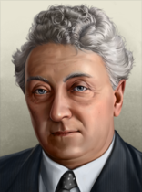 |
约瑟夫·莱昂斯 | 统一澳大利亚党（UAP） | – | – | 起始领袖 |
社会主义 |
约翰·柯廷 | 澳大利亚工党 | – | – | Starting leader; ( | |
斯大林主义 |
理查德·迪克森（Richard Dixon） | Communist Party of Australia | – | – | Starting Communist leader ( | |
法西斯主义 |
阿德拉·潘克赫斯特·沃尔什（Adela Pankhurst Walsh） | 澳大利亚优先运动 | – | – | 起始法西斯领袖 | |
法西斯主义 |
埃里克·坎贝尔 | 中央党 | – | – | Starting Fascist leader; ( | |
中间主义 |
厄尔·佩奇 | 澳大利亚乡村党（ACP） | – | – | Starting Non-Aligned leader ( | |
Despotism |
罗德·赫尔 | 澳大利亚乡村党（ACP） | – | – | If 厄尔·佩奇 retires ( | |
Despotism |
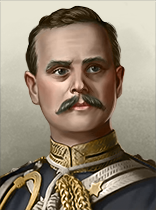 |
威廉·伯德伍德 | 澳大利亚乡村党（ACP） | – | – | Can come to power via |
澳大利亚 的可能国名。
的可能国名。
| 同上 | 国家名称 | Condition |
|---|---|---|
| 澳大利亚 | ||
| 澳大利亚人民共和国 | ||
| Centralist Australia | ||
| 鸸鹋帝国 | ||
| Dominion of Australia |
 澳大利亚 starts as a
澳大利亚 starts as a  自治领 of the
自治领 of the  英国.
英国.
澳大利亚 的部长与军事幕僚。
的部长与军事幕僚。
| 名称 | 特质 | 效果 | 要求 | 花费（） |
|---|---|---|---|---|
| Alexander Hore-Ruthven | 军需总监 | – | 150 | |
| Robert G. Menzies | 幕后暗算者 |
|
– | 150 |
| 本·奇夫利（Ben Chifley） | 能说会道的魅力者 |
|
– | 100 |
| 赫伯特·V·伊瓦特（Herbert V. Evatt） | 沉默的实干家 |
|
|
150 |
| 杰克·比斯利（Jack Beasley） | 军工实业家 | – | 150 | |
| 弗兰克·福德（Frank Forde） | 仁慈绅士 |
|
– | 150 |
| Fergus Foster Munro | 法西斯煽动家 |
|
150 | |
| 兰斯·夏基（Lance Sharkey） | 共产主义革命者 |
|
150 | |
| Arthur Calwell | 民主改革者 |
|
150 | |
| 随机 | 神秘绅士 |
|
|
150 |
| 名称 | 特质 | 效果 | 要求 | 花费（） |
|---|---|---|---|---|
| Norman Makin | 海军理论家 |
|
– | 100 |
| 詹姆斯·费尔贝恩 | 空战理论家 |
|
– | 100 |
| 名称 | 特质 | 效果 | 要求 | 花费（） |
|---|---|---|---|---|
| John Lavarack | 陆军防御（专家） |
|
– | 100 |
| Sydney Rowell | 陆军组织（专家） |
|
– | 100 |
| Vernon Sturdee | 陆军进攻（专精） |
|
– | 50 |
| 名称 | 特质 | 效果 | 要求 | 花费（） |
|---|---|---|---|---|
| Ragnar Colvin | 海军改革者（专家） | – | 100 | |
| Jack Crace | 决战（专家） |
|
– | 100 |
| 名称 | 特质 | 效果 | 要求 | 花费（） |
|---|---|---|---|---|
| Richard Williams | Air Safety (Genius) |
|
– | 200 |
| Charles Burnett | 空军改革者（专家） | – | 100 |
| 名称 | 特质 | 效果 | 要求 | 花费（） |
|---|---|---|---|---|
| Arthur Allen | Infantry (Genius) |
|
– | 200 |
| Clive Caldwell | Air Superiority (Genius) |
|
– | 200 |
| John Collins | 主力舰（专家） |
|
– | 100 |
| Edmund Herring | 火炮（专家） |
|
– | 100 |
| Arthur Drakeford | 空战训练（专家） |
|
– | 100 |
| Cedric Hicks | 陆军后勤（专家） |
|
|
100 |
| 肖像 | 名称 | 特质 | 要求 | |||||
|---|---|---|---|---|---|---|---|---|
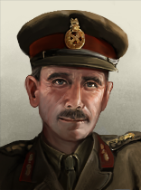 |
Alan Vasey | 3 | 2 | 4 | 3 | 1 | – | |
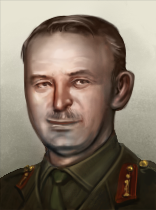 |
亨利·温特 | 4 | 3 | 4 | 3 | 3 | – | |
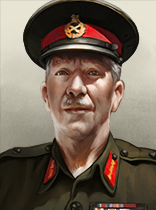 |
Horace Robertson | 3 | 3 | 1 | 3 | 3 | – | |
| Iven Mackay | 3 | 2 | 2 | 3 | 3 |
| ||
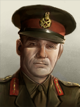 |
John Northcott | 1 | 1 | 1 | 1 | 1 | – | |
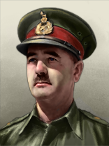 |
Leslie Morshead | 4 | 4 | 2 | 5 | 2 | – | |
| Thomas Blamey | 4 | 4 | 3 | 3 | 3 | – |
| 肖像 | 名称 | MNV |
COR |
特质 | 要求 | |||
|---|---|---|---|---|---|---|---|---|
| Harold Farncomb | 4 | 3 | 3 | 3 | 4 | – | ||
| Victor Crutchley | 3 | 3 | 2 | 3 | 2 | – |
| 标志 | 名称 | 类型 | 效果 | 要求 | 花费（） |
DLC |
|---|---|---|---|---|---|---|

|
BHP Steel | 工业财团 |
|
|
150 | |

|
Jack Piddington | Electronics Developer |
|
|
75 | |

|
新南威尔士铁路公司 | 铁路公司 |
|
150 | ||

|
电子连 | 电子学财团 |
|
|
150 |
澳大利亚 的设计公司。
的设计公司。
| 标志 | 名称 | 类型 | 效果 | 要求 | 花费（） |
DLC |
|---|---|---|---|---|---|---|
|
|
新南威尔士铁路公司 | 机动坦克设计商 |
选择此设计公司后，只要它仍在受雇，就会永久影响其受雇期间研究的所有装备的性能。 |
|
150 |
| 标志 | 名称 | 类型 | 效果 | 要求 | 花费（） |
DLC |
|---|---|---|---|---|---|---|
| 鹦鹉岛船坞与工程 | 轻型舰船专家 |
选择此设计公司后，只要它仍在受雇，就会永久影响其受雇期间研究的所有装备的性能。 |
|
150 | ||
| 埃文斯·迪肯公司 | 太平洋风险 |
选择此设计公司后，只要它仍在受雇，就会永久影响其受雇期间研究的所有装备的性能。 |
|
150 |
| 标志 | 名称 | 类型 | 效果 | 要求 | 花费（） |
DLC |
|---|---|---|---|---|---|---|

|
联邦飞机公司 |
选择此设计公司后，只要它仍在受雇，就会永久影响其受雇期间研究的所有装备的性能。 |
|
50 | ||

|
轻型航空连 | 轻型飞机设计商 |
选择此设计公司后，只要它仍在受雇，就会永久影响其受雇期间研究的所有装备的性能。 |
|
150 | |

|
中型航空连 | 中型飞机设计商 |
选择此设计公司后，只要它仍在受雇，就会永久影响其受雇期间研究的所有装备的性能。 |
|
150 | |

|
重型航空连 | 重型飞机设计商 |
选择此设计公司后，只要它仍在受雇，就会永久影响其受雇期间研究的所有装备的性能。 |
|
150 | |

|
海军空军连 | 海军飞机设计商 |
选择此设计公司后，只要它仍在受雇，就会永久影响其受雇期间研究的所有装备的性能。 |
|
150 |
| 标志 | 名称 | 类型 | 效果 | 要求 | 花费（） |
DLC |
|---|---|---|---|---|---|---|
| Lysagth Works | 支援装备设计商 |
|
|
150 | ||
| Lithgow Small Arms Factory | 步兵装备设计商 |
|
|
150 | ||

|
摩托化连 | 摩托化装备设计商 |
|
|
150 | |

|
火炮连 | 火炮设计商 |
|
|
150 |
 澳大利亚 has access to these 军事工业组织.
澳大利亚 has access to these 军事工业组织.
| ||||||||||||||||||||||||||||||||||||||||||||||||||||||||||||||
| ||||||||||||||||||||||||||||||||||||||||||||||||||||||||||||||||||||||||||||||||||||||||||||||||||||||||||||||||||||||||||||||||||||||||||||
| ||||||||||||||||||||||||||||||||||||||||||||||||||||||||||||||||||||||||||||||||||
| ||||||||||||||||||||||||||||||||||||||||||||||||||||||||||||||||||||||||||||||||||||||||||||||||||||||||||||||||||||||||||||||||||||||||||||||||||||||||||||||||||||||||||||||||||||||||||||||||||||||||||||||||||||||||||||||||||||||||||||||||||||||||||||||||||||||||||||||||||||
 澳大利亚 starts with the following laws:
澳大利亚 starts with the following laws:
1936
| 征兵法案 | 贸易法案 | 经济法令 |
|---|---|---|
|
|
|
1939
| 征兵法案 | 贸易法案 | 经济法令 |
|---|---|---|
|
|
|
年份 |
军用工厂 |
海军船坞 |
民用工厂 |
建筑槽位 |
|---|---|---|---|---|
| 1936 | 4 | 2 | 11 (-6) | 41 |
*红色 中的数字表示生产消费品所需的民用工厂数量，依据经济法案以及军用与民用工厂总数向上取整。
年份 |
石油 |
铝 |
橡胶 |
钨 |
钢铁 |
铬 |
煤 |
|---|---|---|---|---|---|---|---|
| 1936 | 0 | 0 | 0 | 47 (-23) | 41 (-20) | 7 (-3) | 35 (-17) |
*这些数字表示游戏开始一小时后可用的资源量。红色 中的数字表示因贸易法案而留作出口的资源量。
| 类型 | # 1936 | # 1939 | |
|---|---|---|---|
| 步兵 | 5 | 6 | |
| 骑兵 | 2 | ||
| 师总数 | 7 | 8 | |
| 已用人力 | 67.00K | 85.80K | |
| 师 | 名称列表 | # 1936 | # 1939 | 支援连 | 战斗营 |
|---|---|---|---|---|---|
| 步兵师 | 5 | 0 | 11x | ||
| 步兵师 | 0 | 6 | 12x | ||
| 骑兵师 | 2 | 2 | 6x | ||
| Armoured Divisions | 0 | 0 | 2x | ||
| * 标记的是在 1939 年开局中被移除的师。 ^ 标记仅存在于 1939 年开局中的师。 | |||||
| 类型 | # 1936 | # 1939 | |
|---|---|---|---|
| 重巡洋舰 | 2 | ||
| 轻巡洋舰 | 2 | 4 | |
| 驱逐舰 | 5 | ||
| 运输船队 | 100 | 200 | |
| 舰船总数 | 9 | 11 | |
| 已用人力 | 3.85K | 5.45K | |
| 类型 | Class | Hull | 发动机 | # 1936 | # 1939 | 设计说明 | ||
|---|---|---|---|---|---|---|---|---|
| CA | Canberra | 基础巡洋舰 | 巡洋舰 I | 2 | 2 | 2x Medium Battery II, Secondary Battery I, Anti-Air I, Fire Control 0, Cruiser Armor II, Torpedo Launcher I, Floatplane Catapult I | ||
| CA | County | 基础巡洋舰 | 巡洋舰 II | 2x Medium Battery II, Dual-Purpose Secondary Battery I, Anti-Air I, Fire Control 0, Cruiser Armor I, Torpedo Launcher I, Floatplane Catapult I | ||||
| CL | Sydney | 基础巡洋舰 | 巡洋舰 II | 1 | 3 | 2x Light Cruiser Battery II, Anti-Air II, Fire Control 0, Cruiser Armor I, Torpedo Launcher I, Floatplane Catapult I | ||
| CL | Town* | 早期巡洋舰 | 巡洋舰 I | 1 | 1 | Light Cruiser Battery I, Fire Control 0, Cruiser Armor I | ||
| CL | Leander | 基础巡洋舰 | 巡洋舰 II | 2x Light Cruiser Battery II, Dual-Purpose Secondary Battery I, Anti-Air II, Fire Control 0, Cruiser Armor I, Torpedo Launcher I, Floatplane Catapult I | ||||
| DD | S* | 早期驱逐舰 | 轻型 I | 1 | 1 | Light Battery I, Fire Control 0, Torpedo Launcher I, Depth Charge I | ||
| DD | V/W | 早期驱逐舰 | 轻型 I | 4 | 4 | Light Battery I, Anti-Air I, Fire Control 0, Torpedo Launcher I, Depth Charge I | ||
| DD | Arunta | 基础驱逐舰 | 轻型 II | 2x Light Battery II, Anti-Air I, Fire Control 0, Torpedo Launcher I, Depth Charge II, Sonar II | ||||
| * 标记表示该变体「已过时」。 舰种术语：
| ||||||||
| 类型 | |||||
|---|---|---|---|---|---|
| 战斗机 | 0 | 24 | 32 | ||
| 近距空中支援 | 24 | 0 | 48 | ||
| 海军轰炸机 | 0 | 72 | |||
| 飞机总数 | 24 | 24 | 152 | 152 | |
| 已用人力 | 480 | 480 | 3.04K | 3.04K | |
| 类型 | 机体 | Role | 主武器 | 副武器 | 发动机 | 特殊模块 |
|---|---|---|---|---|---|---|
| CAC Boomerang Requires |
基础小型 | 战斗机 | 4x 轻机枪 | 2x 机炮 I | 1x 发动机 II | 副油箱 |
| CAC Woomera Requires |
基础中型 | 战术轰炸机 | 中型弹舱 | 2x 机炮 I | 2x 引擎 III | 轻型机枪防御炮塔 2x |
Australia is one of my favorite countries to play as and so I have created three different strategies: the ahistorical Democratic option, the Fascist option, and the Communist option.
Technically, it is possible for Australia to become Non-Aligned, but other than it being an Imperialist puppet of the British Empire, I've only seen the AI go Non-Aligned from puppeting or players doing it with console commands so I have no idea how to create the Emu Empire unfortunately.
First, take the Focus Never Another Gallipoli. While that is going, arrange your meager divisons into a small army. Begin your construction by building Infrastructure in Central Australia as well as anywhere that there is 1 Level or less of Infrastructure. Begin improving relations with other Pacific countries like Japan, the Dutch East Indies, and the United States. Start your research by researching Carriers, Basic Machine Tools, and Construction I. After you finish Never Another Gallipoli, take the next focus, Protect the Homeland. By this time, the first round of Infrastructure should be finished and you should start by building a mixture of Infrastructure and Civilian Factories in your provinces. Once Construction I and Basic Machine Tools are finished, research Distributed Industry and Excavation I. Protect the Homeland should be finished by now, so choose Sever Ties With UK as your next focus (ignore The SWPA Menace for now).
By now it should mid to late 1936, and other than some international events like Germany remilitarizing the Rhineland and Turkey remiliatrizing the Bospourus Straits, nothing much should have happened. This is good, as you don't want to be dragged into a war alongside the United Kingdom, as it will cancel the focus. Continue improving relations with other Pacific countries, especially Japan. As soon as you become free, begin taking The SWPA Menace but don't leave the Allies. Once that focus finishes, now you can leave the Allies. Complete the focus Woo the USA, which will increase the USA's opinion of you and vice versa, which comes in handy when you'll want to form a faction with them later.
After you become independent and you're closer to the United States, begin improving relations with the Netherlands as much as you can while you take the next focus Protect the Dutch Colonies. When the focus is completed, since you're both Democratic and because you've been improving relations, they should submit and turn over the Dutch East Indies to you, which will make them your puppet.
If you take the next two focuses in the focus tree, you will most likely create a faction with the United States (if they're democratic and you've been improving relations) called the South West Pacific Initiative and will also create a technology sharing group with them. The faction will also include the Philippines and the Dutch East Indies, because they are puppets of you and the US, respectively.
Together with the United States, you are to prepare for your most challenging goal yet: Topple the government of Japan and destroying the SWPA menace. Take the final focus in your Democratic independence tree and gain the "Topple Government" war goal against Japan.
Ask for military access from the United States and the Philippines, both of whom should accept. Send your troops to the Philippines, which you'll be using to launch a naval invasion of Japan.
In my gameplays, by this point, it's usually either 1937 or 1938. Either way, Japan is currently at war with China, the warlords, and possibly Communist China as well. They will be focusing most of their soldiers on the Asian mainland in an attempt to capitulate the Chinese United Front.
However, the Japanese AI doesn't defend their home islands as well as they probably should, leaving them very vulnerable to a naval invasion. Station all your troops at the Philippines and prepare a naval invasion to land near their southern territories.
Once the focus is completed, declare war and call in the United States, the Dutch East Indies, and the Philippines. Begin your naval invasion as soon as possible, don't give Japan a chance to rally their remaining troops to invade the Philippines first. Don't worry about their smaller islands, the US and the few Philippines soldiers will take care of those for you, just focus on taking their home islands.
Land in one of Japan's southern provinces and just begin a quick almost blitzkrieg-style push for Tokyo, and you should be able to capitulate them easily. Toyko should be quickly surrounded if you either micromanage or battle plan your way there, because the United States should also be invading, usually from the surrounding smaller islands, but occasionally using Alaska or Attu Island as a push-off point.
During the peace conference, liberate Manchukuo and Menchukuo as democracies and set up Japan as a democracy as well. If the United Kingdom has Empowered the King's Party and New Zealand has broken away, invite them to your faction and they should accept.
At this point you could send troops to support your former master in their war against Germany and Italy, but with Japan brought down and no more threats in the Pacific, you're basically free to do whatever you want. You could do the above suggestion or you could try declaring on the UK and France to liberate their Asian-Pacific colonies like Malaysia, Vietnam, Laos, and Cambodia, but the choice is up to you.
Similar to the starting of the above playthrough, begin by taking the Never Another Gallipoli focus, which starts you on your path to indepence and eventually the liberation of all the workers of the Pacific. Start by building Infrastructure and Civilian Factories in your provinces, especially the 所罗门群岛和巴布亚新几内亚. After Never Another Gallipoli is finished, take the mutually exclusive focus Abandon the Westminster System. This focus increases the popularity of both fascism and communism and decreases democracy as well as increasing autonomy.
Once you finish abandoning the Westminster, you should have another autonomy progress to be able to take the focus Empower the Workers. While you're working on this focus, liberate both Papua New Guinea and the Solomon Islands as your puppets. Once you complete that focus, the Communist Revolutionary political advisor, Lance Sharkey, will become free. You should have enough Political Power (PP) saved up so that you can afford to get him. Communist support will start rising, as the National Spirit you get from that focus also gives you Communism boosts.
As soon as you can, spend your remaining PP choose the decision to Open Up Political Discourse (75 PP). After that, if you have enough PP, take the decisions to Discredit the Government (50 PP), which gives a big Communism boost, and then take Expand Civil Support (25 PP) as many times as you need to get the required support to Hold a National Referendum (100 PP).
Once you switch to Communism, continue down the communist side of the focus tree. Take the next focus and Send a Delegation to China, which will boost Communism in Nationalist China and give you an opinion boost in Communist China. Once you finish that, take the Commitment to the Cause focus to finally become free from the United Kingdom.
After you become freed and you leave the Allies, you have an option: you can either take Direct Supporr and eventually join the Comintern or maybe the Mutual Assistance Bloc (if Communist China has formed that faction) or you can choose Indirect Support and create a separate Communist faction.
Because I didn't feel like eventually getting dragged into a war by either the Soviets or the Chinese, I opted for Indirect Support followed by Workers' Paradise. Following this, you should next improve relations with your close neighbor, New Zealand, while you take the focus New Zealand (NZ) Puppet. If they accept, New Zealand will join your faction, which should also already include the Solomon Islands and Papua New Guinea.
If they don't, mobilize your divisions for a naval invasion of their homeland, the North and South Islands. Begin justifying a day after you begin preparations for the naval invasion, which should finish about 20 days before the justification does. Once you're ready, declare war on New Zealand and naval invade them.
While you do have a weak army, they have a much weaker army and should capitulate fairly easily. During the peace conference, puppet them and liberate Samoa as a puppet as well. With the help of your puppets, declare on the Dutch East Indies. They'll call in their overlords, the Netherlands, but you just need to capitulate the Dutch East Indies and the Netherlands should just back off.
Release the Dutch East Indies as a puppet and then take the focus The Threat Against the People, which gives you a puppet wargoal against Japan. Prepare a naval invasion by requesting military access and docking rights from the Soviets, who will agree.
Use this access to transport all your troops up to the Soviet Union and wait for the focus to finish. Then, once it does, invade Japan, moving southwards from their northern territories. Once you conquer Tokyo and then Nagasaki, Japan will surrender. Take all their islands and liberate them as puppets and puppet Japan in their homeland islands. Also return some of Japan's territory to Communist China as a thank you.
At this point, you could declare on United States and use your Pacific and Asian powers as well as potential allies the Soviets to declare on the United States and invade them from.the East. After island-hopping all the way to Hawaii, and conquering Attu Island and Alaska as well, I then used Hawaii as a naval base to launch an invasion into California. After overrunning the West Coast I spearheaded my way through the weakly defended center states all the way to DC on the other end. It requires some braveness, a lot of stupidity, so much micromanaging, and guts to do it, but it was worth it at the peace conference when I liberated the US and all their island territories and became the second biggest Communist power in the world.
Recommended Focus Order: 1. Never Another Gallipoli 2. Abandon the Westminster System 3. Support the Centre Party 4. Supply Indonesian Nationalists 5. Support Indonesian Uprising 6. Protect the South West Pacific 7. Demand New Zealand 8. Our Own Empire 9. War With Japan 10. Establish War Advisory Council
The first focus, as stated in the above strategies, begins your path of secession and freedom. Abandon the Westminster System grants you more support for Fascism & Communism and Support the Centre Party allows you to gain the Fascist Demagogue advisor.
Supplying and Supporting the Indonesian Nationalists allows you to aid the Fascists in the Dutch East Indies in a bid for freedom. If they fail, you can later annex the Dutch East Indies and then either liberate them as a puppet or integrate them into your nation.
Protect the South West Pacific and Demand New Zealand will allow you to puppet British Malaysia and New Zealand. The United Kingdom and New Zealand will never agree, so you must declare war against New Zealand and invade both - they should capitulate easily enough as it only requires around 3-4 divisions for both.
Our Own Empire allows you to finally break away from the United Kingdom and become free, then leave the Allies, however this is useless as it has a prerequisite of demanding New Zealand, which requires you to be independent. It's mutually exclusive with A Deal with Japan, which I dislike because it forces you to give either Malaysia or your territories of Kalimantan, Sulawesi, and The Moluccas to Japan in exchange for an alliance and a non-aggression pact. While you do enter a Technology Sharing Group with Japan, the cons outweigh the pros in this case as you'll lose territories to them.
After you complete Our Own Empire, you will then be able to take the focus War with Japan, which gives you the war goal to annex Japan upon completion.
If Japan is at war with the Chinese United Front, declare on them and naval invade from Malaysia. As I pointed out in my earlier strategies, the Japanese AI does not guard their home islands as much as they probably should, so sending all your (and your puppets') forces and landing on their core provinces should capitulate them easily enough.
However, you won't be able to take either Mengkukuo or Manchukuo because you didn't invade them but if you want to liberate Korea and Japan as puppets, I would recommend that as they both provide good industry and manpower.
At this point, you will be the strongest in the Pacific realm and you can now decide what to do with your nation next.

澳匈帝国 作为澳大利亚，拥有匈牙利的全部核心领土。 |

再来一次，伙计 作为澳大利亚占领加里波利。 |

统治不列颠（Rule Britannia） 作为任一英国自治领，征服整个不列颠。 |

第三次鸸鹋战争的武器 作为澳大利亚，对澳大利亚核心领土使用一枚核弹。 |

第七个州（The 7th State） 作为澳大利亚，拥有并完全控制新西兰 |

正面朝上（The rightside up） 作为澳大利亚，拥有并完全控制扬马延。 |

一顿美味的中餐 作为澳大利亚吞并并拥有中国的一个省份。 |

跳华尔兹的玛蒂尔达（Waltzing Matilda） 作为澳大利亚部署 25 个重型坦克营。 |

ANZAC 作为澳大利亚或新西兰，在希腊设立一个集团军司令部，并确保希腊在 1945 年前不投降。 |
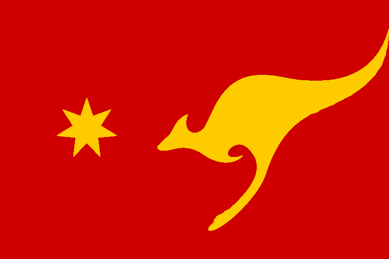
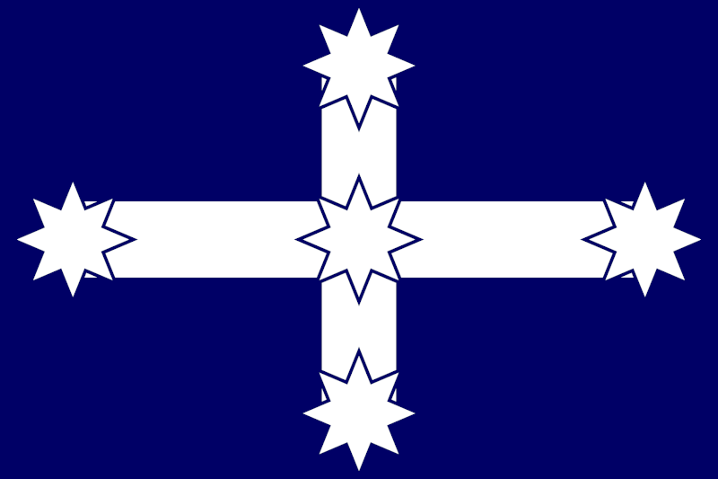
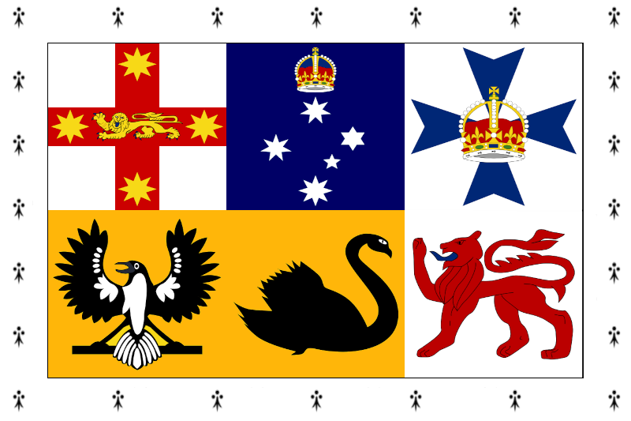
| 北美洲 |
| 南美洲 |
| 大洋洲 |
| Americas |
|
| 大洋洲 |
|